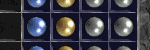

+ HONORIFC AND CRAFTED ITEMS +
HONORIFIC AND SHRINE CRAFTED ITEMS
These item types are new in Median XL.
Mystic Orbs
You may have found some 'Mystic Orbs' or seen them for sale. Mystic Orbs can be applied to an item in
the Horadric Cube, adding the Orb's affix along with a +2 level penalty, up to 15 times per Orb type.
The level penalty is applied to the required level of either the base item or the socket fillers, whichever is higher. Take into account the runes or jewels you want to socket into the item or you may end up with an unusable item!

Honorific Items
Honorific items take the concept of Mystic Orbs one step further. Instead of merely improving an existing item, honorific items allow you to create your items from scratch with Mystic Orbs. To create a honorific item, use the Cube to turn a magic item into a honorific item. See the cube recipe list for more information.
The resulting honorific item has a green name and no magical affixes, but any Mystic Orb bonuses you apply to it are doubled, making them very effective indeed.
Honorific items get double bonuses from Mystic Orbs.
Honorific items have max sockets for their item type and tier.

Shrine Crafted Items
Starting in late Terror difficulty, you may find 'Portable Shrines', the renmants of the shrines below Tristram after the collapse of the labyrinth. These are multipurpose items that allow you to add random bonuses to an existing item or create your own. A full list of functions can be found in the cube recipe list.
Items created with shrines have an orange name and a combination of random and preset affixes.
Crafted items get double bonuses from Mystic Orbs.
Crafted items have max sockets for their item type and tier.